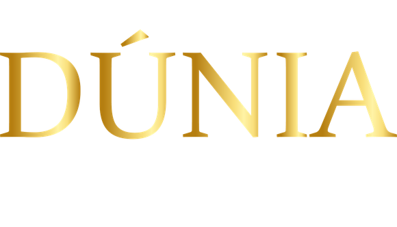
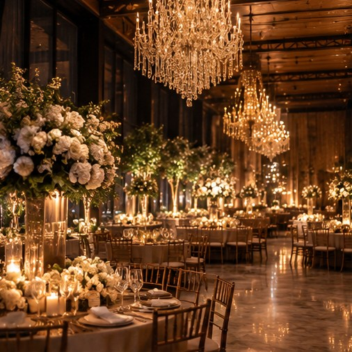
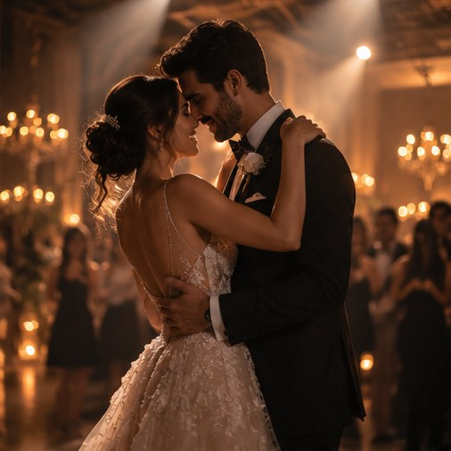
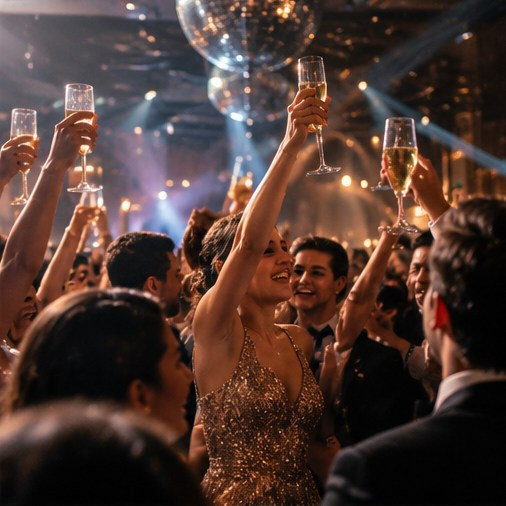
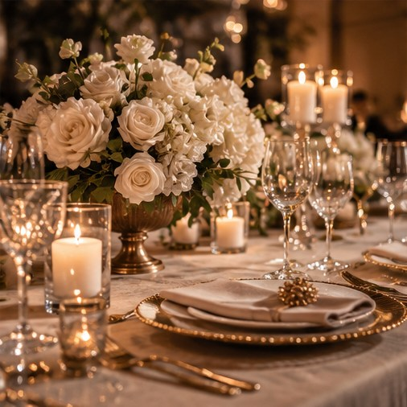
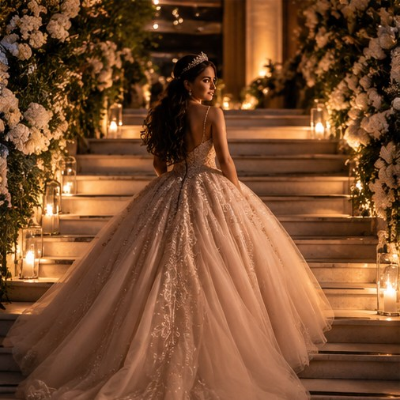
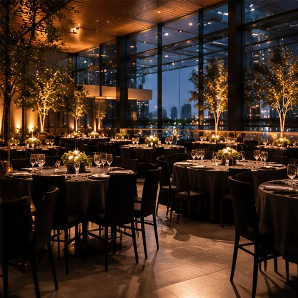

Dúnia Invite
Mini-site exclusivo, mapa, cronograma e confirmação de presença.
- URL personalizada
- Temas visuais
- RSVP e mensagens

O LUGAR ONDE AS HISTÓRIAS ACONTECEM
Não é apenas uma festa. É a mão que treme antes do sim. É o abraço que demora. É a noite que vira parte de quem somos.
ENTRE NESSA HISTÓRIA ↗Mas podemos criar o cenário onde ele acontece. Uma experiência pensada para emocionar antes, durante e muito depois.

CAPÍTULO 01 A EXPECTATIVA
Antes do primeiro convidado chegar, cada luz acesa, cada mesa preparada e cada detalhe carregam uma promessa: hoje, algo extraordinário vai acontecer.
O SILÊNCIO ANTES DA PRIMEIRA MÚSICA
CAPÍTULO 02 O ENCONTRO
Um olhar atravessa a sala. A música começa. As pessoas que importam estão ali. E, por alguns instantes, o mundo parece existir apenas para aquele encontro.
O INSTANTE EM QUE TUDO FAZ SENTIDO
CAPÍTULO 03 A MEMÓRIA
As flores são recolhidas, as luzes se apagam. Mas aquele abraço, aquela risada e aquela canção continuam existindo dentro de nós.
PORQUE O QUE FICA É O QUE SENTIMOSO tempo passa. As histórias continuam passando diante dos nossos olhos. Desça a página e deixe a película revelar cada lembrança.



ROLE PARA DESENROLAR A HISTÓRIA →
Há lugares que recebem eventos.
Outros guardam histórias.
Cada celebração tem uma energia própria. E merece um cenário que se transforme junto com ela.
Quando duas histórias escolhem se tornar uma.
EXPLORAR ↗Um capítulo que merece ser vivido por inteiro.
EXPLORAR ↗Encontros que aproximam pessoas e ideias.
EXPLORAR ↗Os momentos que merecem virar história.
EXPLORAR ↗Conteúdos de demonstração para o futuro blog editorial. Planejamento, tendências e tudo o que acontece antes do grande dia.
Uma plataforma para transformar cada evento em um universo próprio: mini-site personalizado, convite com QR Code, RSVP, painel de convidados e uma galeria para reviver o grande dia.
O espaço oferece serviços digitais que acompanham toda a jornada do cliente, do convite ao álbum pós-evento.
Mini-site exclusivo, mapa, cronograma e confirmação de presença.
Gestão de convidados, convites individuais e check-in por código ou QR.
Álbum privado e temporário, acessível pelo mini-site depois do evento.
* Na demonstração, a sincronização ocorre somente entre telas do mesmo navegador, via armazenamento local.
O casamento de
Preparamos este espaço para compartilhar as informações e guardar as lembranças de um dia muito especial.
✳Informe o código do seu convite para confirmar sua presença. Para testar, use .
Após a celebração, esta página também pode se tornar um álbum temporário de memórias. As imagens abaixo são demonstrativas.
Cadastre convidados, acompanhe confirmações e exporte a lista.
| CONVIDADO | CÓDIGO | VAGAS | STATUS | ENTRADA | AÇÕES |
|---|
Altere os campos e abra o mini-site para ver as atualizações.
14 DE DEZEMBRO DE 2026
A demonstração utiliza uma página-modelo editável. Na versão real, o painel gerará URLs únicas por evento.
Recepção organizada com código individual e registro de entrada.
Digite um código de convite. Na primeira visita, teste DUNIA-001.
Simule a publicação de uma galeria temporária para os convidados.
Fotos ilustrativas já incluídas no pacote. Upload e armazenamento de arquivos exigem backend e permissões na versão comercial.
Simule o potencial de receita com serviços digitais adicionais por evento.
Cálculo ilustrativo: eventos × adesão × ticket. Não é projeção garantida de vendas nem considera custos, impostos ou inadimplência.
Convidado
DUNIA-001Apresente este código na recepção do evento. QR demonstrativo válido no painel local.